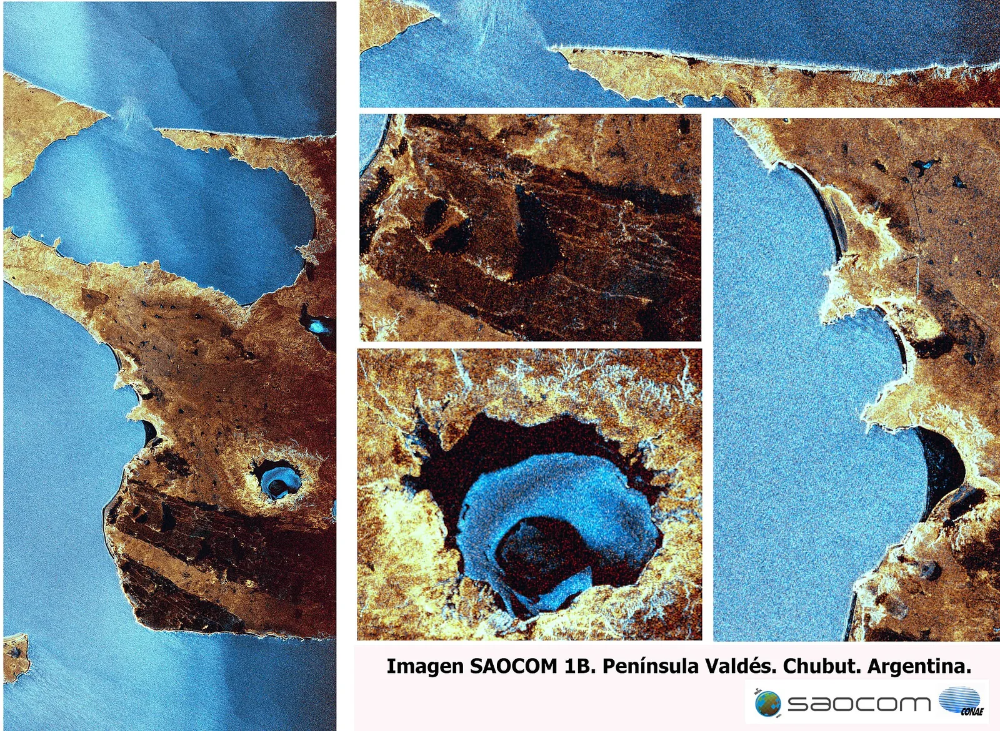
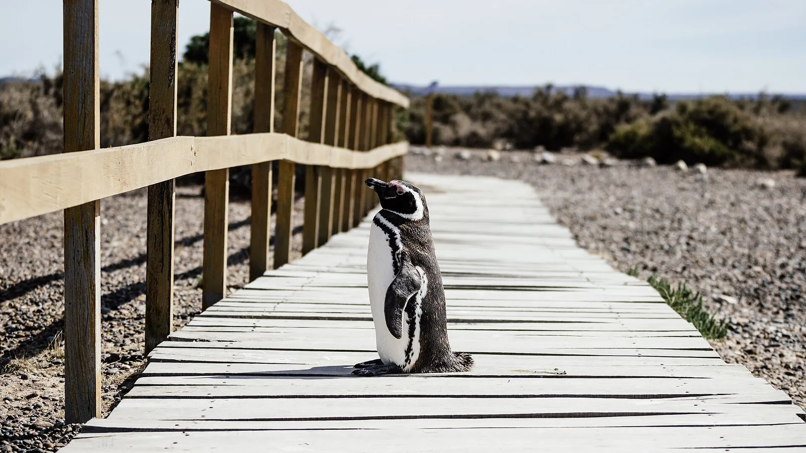

S7 · Sur
S7 · Süden
S7 · South
Península Valdés
y ballenas que les cantan a sus crías.
und Wale, die ihren Jungen vorsingen.
and whales that sing to their calves.
Información
La Península Valdés, en Chubut, abarca unas 360.000 hectáreas y se mete más de 100 kilómetros en el Atlántico Sur. Tiene unos 400 kilómetros de costa, con acantilados de hasta 100 metros, bahías poco profundas, lagunas costeras, médanos activos e islas pequeñas.
Es un sitio de importancia mundial para la conservación de mamíferos marinos: ahí se reproduce la ballena franca austral, una especie amenazada, y también el elefante marino del sur y el lobo marino de un pelo.
Las orcas de esta costa desarrollaron una técnica de caza propia, adaptada a las condiciones de este litoral y que no se repite en otras poblaciones.
Information
La Península Valdés, en Chubut, abarca unas 360.000 hectáreas y se mete más de 100 kilómetros en el Atlántico Sur. Tiene unos 400 kilómetros de costa, con acantilados de hasta 100 metros, bahías poco profundas, lagunas costeras, médanos activos e islas pequeñas.
Es un sitio de importancia mundial para la conservación de mamíferos marinos: ahí se reproduce la ballena franca austral, una especie amenazada, y también el elefante marino del sur y el lobo marino de un pelo.
Las orcas de esta costa desarrollaron una técnica de caza propia, adaptada a las condiciones de este litoral y que no se repite en otras poblaciones.
Information
La Península Valdés, en Chubut, abarca unas 360.000 hectáreas y se mete más de 100 kilómetros en el Atlántico Sur. Tiene unos 400 kilómetros de costa, con acantilados de hasta 100 metros, bahías poco profundas, lagunas costeras, médanos activos e islas pequeñas.
Es un sitio de importancia mundial para la conservación de mamíferos marinos: ahí se reproduce la ballena franca austral, una especie amenazada, y también el elefante marino del sur y el lobo marino de un pelo.
Las orcas de esta costa desarrollaron una técnica de caza propia, adaptada a las condiciones de este litoral y que no se repite en otras poblaciones.
La UICN evalúa Península Valdés como de «preocupación significativa». La población de ballena franca austral —la especie emblema del sitio— sigue creciendo, pero cada vez más despacio, y se registran niveles inusualmente altos de mortandad: el número de ballenas muertas por año viene en aumento y la investigación científica sobre las causas continúa.
A eso se suma el impacto de la gripe aviar H5N1 sobre la fauna marina y las aves, en especial la mortandad masiva de elefantes marinos del sur.
La UICN evalúa Península Valdés como de «preocupación significativa». La población de ballena franca austral —la especie emblema del sitio— sigue creciendo, pero cada vez más despacio, y se registran niveles inusualmente altos de mortandad: el número de ballenas muertas por año viene en aumento y la investigación científica sobre las causas continúa.
A eso se suma el impacto de la gripe aviar H5N1 sobre la fauna marina y las aves, en especial la mortandad masiva de elefantes marinos del sur.
La UICN evalúa Península Valdés como de «preocupación significativa». La población de ballena franca austral —la especie emblema del sitio— sigue creciendo, pero cada vez más despacio, y se registran niveles inusualmente altos de mortandad: el número de ballenas muertas por año viene en aumento y la investigación científica sobre las causas continúa.
A eso se suma el impacto de la gripe aviar H5N1 sobre la fauna marina y las aves, en especial la mortandad masiva de elefantes marinos del sur.
Fuentes
Quellen
Sources
- UICN, Perspectiva del Patrimonio Mundial (evaluación 2025), Península Valdés — https://worldheritageoutlook.iucn.org/explore-sites/peninsula-valdes
Galería
Galerie
Gallery



Fuentes
Quellen
Sources
- UNESCO, Centro del Patrimonio Mundial, Península Valdés — https://whc.unesco.org/en/list/937/ consultado 2026-10-05abgerufen 2026-10-05accessed 2026-10-05